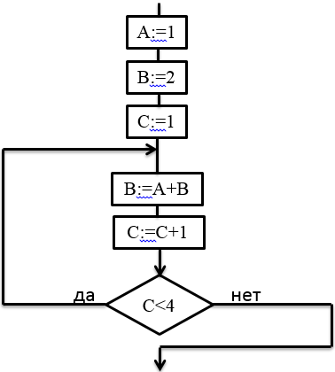
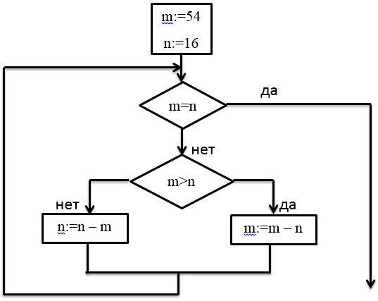

Формы представления алгоритмов
УТВЕРЖДЕНО
« » ________ 2015 г.
Дата
Дисциплина: Теория алгоритмов
Практическое занятие № 1
Наименование: Формы представления алгоритмов
по специальности:
09.02.03 – Программирование в компьютерных системах
Количество часов 2
РАССМОТРЕНО
на заседании цикловой комиссии Информационные системы и технологии
наименование П(Ц)К
Председатель ____________/ Шомас Е.А. /
подпись расшифровка подписи
Протокол __________ от « » 04 2015 г.
номер дата
Составил преподаватель
Пронина Т.С.
Самара, КС ПГУТИ, 2015
Практическое занятие №1
- Наименование: Формы представления алгоритмов
- Цель занятия: Изучить формы представления алгоритмов
- Подготовка к занятию:
- Изучить формы представления алгоритмов
- Ответить на вопросы для допуска к занятию
- Что такое алгоритм, исполнитель алгоритма, среда алгоритма?
- В какой форме может быть представлен алгоритм?
- Приведите примеры задач, решаемых с помощью алгоритмов.
- Литература:
- Конспект лекций по учебной дисциплине «Теория алгоритмов»
- Приложение к практическому занятию №1
- Перечень используемых материалов:
- Канцелярские принадлежности
- Описание практического занятия
- Задание на занятие:
Основная часть
Задача 1 Имеется исполнитель Кузнечик, который живет на числовой оси. Система команд Кузнечика: «Вперед N» (Кузнечик прыгает вперед на N единиц); «Назад М» (Кузнечик прыгает назад на М единиц). Переменные N и М могут принимать любые целые положительные значения. Известно, что Кузнечик выполнил программу из 50 команд, в которой команд «Назад 2» на 12 больше, чем команд «Вперед 3». Других команд в программе не было. На какую одну команду можно заменить эту программу, чтобы Кузнечик оказался в той же точке, что и после выполнения программы?
Задача 2 Исполнитель Черепашка перемещается на экране компьютера, оставляя след в виде линии. В каждый конкретный момент известно положение исполнителя и направление его движения. У исполнителя существует две команды:
«Вперёд n», где n целое число, вызывающая передвижение Черепашки на n шагов в направлении движения.«Направо m», где т целое число, вызывающая изменение направления движения на m градусов по часовой стрелке.Запись Повтори 5 [Команда 1, Команда 2] означает, что последовательность команд в скобках повторится 5 раз.Черепашке был дан для исполнения следующий алгоритм:Повтори 5 [Вперед 10 Направо 72]Какая фигура появится на экране?Задача 3 Исполнитель Робот действует на клетчатой доске, между соседними клетками которой могут стоять стены. Робот передвигается по клеткам доски и может выполнять команды 1 (вверх), 2 (вниз), 3 (вправо) и 4 (влево), переходя на соседнюю клетку в направлении, указанном в скобках. Если в этом направлении между клетками стоит стена, то Робот разрушается. Робот успешно выполнил программу 1132432.
Какую последовательность из четырех команд должен выполнить Робот, чтобы вернуться в ту клетку, где он был перед началом выполнения программы, и не разрушиться вне зависимости от того, какие стены стоят на поле?Задача 4 Определите значение целочисленных переменных a и b после выполнения фрагмента программы на алгоритмическом языке:a:= 2468b:= mod(a, 1000) • 10a:=div(a,1000)+b|div и mod – функции, вычисляющие результат деления нацело первого аргумента на второй и остаток от деления соответственно |Задача 5 Определите значение переменной a после выполнения фрагмента алгоритма:
 Вариативная часть
Вариативная частьЗадача 1 Определите значение целочисленных переменных a и b после выполнения фрагмента программы на алгоритмическом языке:
a:=42b:=14a:=div(a, b)b:=a • ba:=div(b,a) | div - стандартная функция, вычисляющая результат деления нацело первого аргумента на второй |Задача 2 В понедельник в одном из классов должно быть проведено 4 урока – по математике, физике, информатике и биологии. Учителя высказали свои пожелания для составления расписания. Учитель математики хочет иметь первый или второй урок, учитель физики - второй или третий урок, учитель информатики – первый или четвертый, учитель биологии – третий или четвертый. Какой вариант расписания устроит всех учителей школы?
(Обозначения: М – математика, Ф – физика, И – информатика, Б – биология)Задача 3 Определите значение переменной А после выполнения следующего алгоритма:

- Порядок выполнения работы:
- Получите допуск к занятию
- Решите задачи 1-5
- Сдайте зачет
- В случае успешной сдачи зачета приступите к решению вариативной части
- Содержание отчета:
Основная частьВариативная часть
- Контрольные вопросы:
- Перечислите свойства алгоритма и дайте пояснение по каждому пункту.
- Укажите все условные обозначения для блок – схем алгоритмов.
Приложение А к практическому занятию №1
- 1 Имеется исполнитель Кузнечик, который живет на числовой оси. Система команд
Кузнечика: «Вперед N» (Кузнечик прыгает вперед на N единиц); «Назад М» (Кузнечик
прыгает назад на М единиц). Переменные N и М могут принимать любые целые
положительные значения. Известно, что Кузнечик выполнил команду из 40 команд, в
которой команд «Назад 2» на 10 больше, чем команд «Вперед 3». Других команд в
программе не было. На какую одну команду можно заменить эту программу, чтобы
Кузнечик оказался в той же точке, что и после выполнения программы?
Решение:Если всего команд 40, то команд «Назад 2» было 25, а «Вперед 3» всего 15. Кузнечик прыгнул вперед на 15•3= 45 шагов, а назад на 25•2= 50 шагов. Тем самым, он оказался на 5 шагов от первоначальной точки. Последовательность команд в алгоритме в данном случае не имеет значения.Ответ: Назад 5
-
2 Исполнитель Черепашка перемещается на экране компьютера, оставляя след в виде линии. В каждый конкретный момент известно положение исполнителя и направление его движения. У исполнителя существует две команды:
«Вперёд n», где n целое число, вызывающая передвижение Черепашки на n шагов в направлении движения.«Направо m», где т целое число, вызывающая изменение направления движения на m градусов по часовой стрелке.Запись Повтори 5 [Команда 1, Команда 2] означает, что последовательность команд в скобках повторится 5 раз.Черепашке был дан для исполнения следующий алгоритм:Повтори 5 [Вперед 10 Направо 72]Какая фигура появится на экране?Решение:Черепашка прочертит на экране 4 линии, но последний отрезок полностью совпадет с первым, так как после третьего выполнения цикла черепашка полностью обернется вокруг своей оси и окажется в той же точке, что и изначально. Так что на экране появится правильный треугольник. -
3 Исполнитель Робот действует на клетчатой доске, между соседними клетками которой могут стоять стены. Робот передвигается по клеткам доски и может выполнять команды 1 (вверх), 2 (вниз), 3 (вправо) и 4 (влево), переходя на соседнюю клетку в направлении, указанном в скобках. Если в этом направлении между клетками стоит стена, то Робот разрушается. Робот успешно выполнил программу 3233241Какую последовательность из четырех команд должен выполнить Робот, чтобы вернуться в ту клетку, где он был перед началом выполнения программы, и не разрушиться вне зависимости от того, какие стены стоят на поле?Решение:Начертим траекторию, по которой двигался Робот. Обозначим буквой А - начальную точку его движения, В – конечную. Из рисунка видно, что возвращение из точки В в точку А можно осуществить по программе из трех команд: влево – вверх – влево, т.е. 414.Ответ: 414
-
4 Определите значение целочисленных переменных х, у, и t после выполнения фрагмента программы на алгоритмическом языке:x:= 5;y:=7;t:=x;x:=mod(y,x);| mod – стандартная функция, вычисляющая остаток от деления нацело первого аргумента на второй | y:=t;Решение:
Шаг Значение x после шага Значение у после шага Значение t после шага x= 5 5 не определено не определено y=7 5 7 не определено t=x 5 7 5 x=y MOD x 2 7 5 y=t 2 5 5 Ответ: x=2, y=5, t=5 -
5Определите значение целочисленной переменной x после выполнения следующего фрагмента программы:Решение:В блок-схеме присутствует цикл, т.е. одни и те же команды многократно повторяются. Для того, чтобы не ошибиться при выполнении блок схемы, удобно составить табличку, в которую заносятся значения переменных и результаты проверки условия на каждом шаге.Примечание: . Знак <> означает «не равно», знак := - присваивание значения.
N итерации цикла Значение x Значение y x<>y x>y 0 55 75 55<>75 – да (выполняем тело цикла) 0 1 55 75 55>75 – нет (вычитаем x из y) 1 55 20 55 20 55<>20 – да (выполняем тело цикла ) 2 35 20 35 20 35<>20 – да (выполняем тело цикла) 3 35 20 35>20 – да (вычитаем y из x ) 3 15 20 15 20 15<>20 – да (выполняем тело цикла) 4 15 20 15>20 – да (вычитаем y из x ) 4 15 5 4 15 5 15<>5 – да (выполняем тело цикла) 5 15 5 15>5 – да (вычитаем y из x ) 5 15 5 5 10 5 10 5 10<>5 – да (выполняем тело цикла) 6 10 5 10>5 – да (вычитаем y из x ) 6 5 5 5 5 5<>5 – да (алгоритм завершен) Итак, переменная x после выполнения данного фрагмента программы приняла значение 5, что соответствует ответу под номером 2 в таблице ответов.Ответ: 2
Приложение Б к практическому занятию №1
-
Вариант 1Определите значение переменной с после выполнения фрагмента алгоритма:Примечание: знаком * обозначено умножение, знаком := обозначена операция присваивания.
-
Вариант3Определите значение переменной b после выполнения фрагмента алгоритма:Примечание: знаком * обозначено умножение, знаком := обозначена операция присваивания.
-
Вариант 3Определите значение переменной A после выполнения следующего алгоритма:Примечание: знаком * обозначено умножение, знаком := обозначена операция присваивания.
-
Вариант 4Определите значение переменной s после выполнения следующего алгоритма:Примечание: знаком * обозначено умножение, знаком := обозначена операция присваивания.
-
Вариант 5Определите значение целочисленной переменной x после выполнения следующего фрагмента программы:Примечание: знаком * обозначено умножение, знаком := обозначена операция присваивания.
-
Вариант 6Определите значение переменной B после выполнения следующего алгоритма:Примечание: знаком * обозначено умножение, знаком := обозначена операция присваивания.
-
Вариант 7Определите значение переменной с после выполнения фрагмента алгоритма:Примечание: знаком * обозначено умножение, знаком := обозначена операция присваивания.
-
Вариант 8Определите значение переменной a после выполнения фрагмента алгоритма:Примечание: знаком * обозначено умножение, знаком := обозначена операция присваивания.
-
Вариант 9Определите значение переменной m после выполнения фрагмента алгоритма:Примечание: знаком * обозначено умножение, знаком := обозначена операция присваивания.
-
Вариант 10Определите значение переменной с после выполнения фрагмента алгоритма:Примечание: знаком * обозначено умножение, знаком := обозначена операция присваивания.
-
Вариант 11Определите значение переменной a после выполнения фрагмента алгоритма:Примечание: знаком * обозначено умножение, знаком := обозначена операция присваивания.
-
Вариант 12Определите значение переменной c после выполнения фрагмента алгоритма:Примечание: знаком * обозначено умножение, знаком := обозначена операция присваивания.
-
Вариант 13Определите корни квадратного уравнения:Примечание: знаком * обозначено умножение, знаком := обозначена операция присваивания.
-
Вариант 14Определите НОД для чисел M=54, N=81:Примечание: знаком * обозначено умножение, знаком := обозначена операция присваивания.
-
Вариант 15Определите значение факториала n=4:Примечание: знаком * обозначено умножение, знаком := обозначена операция присваивания.
-
Вариант 16Определите значение переменной m после выполнения фрагмента алгоритма:Примечание: знаком * обозначено умножение, знаком := обозначена операция присваивания.
-
Вариант 17Определите корни квадратного уравнения:Примечание: знаком * обозначено умножение, знаком := обозначена операция присваивания.
-
Вариант 18Определите значение целочисленной переменной x после выполнения следующего фрагмента программы:Примечание: знаком * обозначено умножение, знаком := обозначена операция присваивания.
-
Вариант 19Определите значение переменной B после выполнения следующего алгоритма:Примечание: знаком * обозначено умножение, знаком := обозначена операция присваивания.
-
Вариант 20Определите значение переменной с после выполнения фрагмента алгоритма:
 Примечание: знаком * обозначено умножение, знаком := обозначена операция присваивания.
Примечание: знаком * обозначено умножение, знаком := обозначена операция присваивания. -
Вариант 21Определите значение переменной a после выполнения фрагмента алгоритма:Примечание: знаком * обозначено умножение, знаком := обозначена операция присваивания.
-
Вариант 22Определите значение переменной m после выполнения фрагмента алгоритма:Примечание: знаком * обозначено умножение, знаком := обозначена операция присваивания.
-
Вариант 23Определите значение переменной с после выполнения фрагмента алгоритма:Примечание: знаком * обозначено умножение, знаком := обозначена операция присваивания.
-
Вариант 24Определите значение переменной a после выполнения фрагмента алгоритма:Примечание: знаком * обозначено умножение, знаком := обозначена операция присваивания.
-
Вариант 25Определите значение переменной c после выполнения фрагмента алгоритма:Примечание: знаком * обозначено умножение, знаком := обозначена операция присваивания.
-
Вариант 26Определите корни квадратного уравнения:Примечание: знаком * обозначено умножение, знаком := обозначена операция присваивания.
-
Вариант 27Определите НОД для чисел M=62, N=97:Примечание: знаком * обозначено умножение, знаком := обозначена операция присваивания.
-
Вариант 28Определите значение факториала n=7:Примечание: знаком * обозначено умножение, знаком := обозначена операция присваивания.
-
Вариант 29Определите значение переменной m после выполнения фрагмента алгоритма:Примечание: знаком * обозначено умножение, знаком := обозначена операция присваивания.
-
Вариант 30Определите корни квадратного уравнения:Примечание: знаком * обозначено умножение, знаком := обозначена операция присваивания.
Приложение В к практическому занятию №1
-
Вариант 1Определите значение целочисленных переменных x, y, и t после выполнения фрагмента программы (ниже представлена одна и та же программа, записанная на разных языках программирования):
Бейсик Паскаль Алгоритмический x =10 y =14 t = x ` MOD – стандартная операция, вычисляющая остаток от деления нацело первого аргумента на второй x=y MOD x y=tx:=10; y:=14; t:=x; x:=y mod x; {mod - стандартная операция, вычисляющая остаток от деления нацело первого аргумента на второй} y:=t;x:=10; y:=14; t:=x; x:=mod (y,x); | mod -стандартная функция, вычисляющая остаток от деления нацело первого аргумента на второй| y:=t;
-
Вариант 2Определите значение целочисленных переменных a, и b после выполнения фрагмента программы (ниже представлена одна и та же программа, записанная на разных языках программирования):
Бейсик Паскаль Алгоритмический a =42 b =14 a = a\b b = a*b a = b\a \ - стандартная операция, вычисляющая результат деления нацело первого аргумента на второйa:=42; b:=14; a:=a div b; b:=a*b; a:=b div a; {div - стандартная операция, вычисляющая результат деления нацело первого аргумента на второй }a:=42 b:=14 a:=div(a, b) b:=a*b a:=div(b, a) | div - стандартная функция, вычисляющая результат деления нацело первого аргумента на второй |
-
Вариант 3Определите значение целочисленных переменных a, и b после выполнения фрагмента программы (ниже представлена одна и та же программа, записанная на разных языках программирования):
Бейсик Паскаль Алгоритмический a =2468 b =(a MOD 1000)*10 a = a\1000+b `\ и MOD - операции, вычисляющие результат деления нацело первого аргумента на второй и остаток от деления соответственноa:= 2468; b:= (a mod 1000)*10; a:=a div 1000+b; {div и mod - операции, вычисляющие результат деления нацело первого аргумента на второй и остаток от деления соответственно }a:=2468 b:= mod (a,1000)*10; a:=div(a,1000)+b | div и mod - функции, вычисляющие результат деления нацело первого аргумента на второй и остаток от деления соответственно |
-
Вариант 4Определите значение целочисленных переменных x, y, и t после выполнения фрагмента программы (ниже представлена одна и та же программа, записанная на разных языках программирования):
Бейсик Паскаль Алгоритмический x =4 y =16 t = x ` MOD – стандартная операция, вычисляющая остаток от деления нацело первого аргумента на второй x=y MOD x y=t +1x:=4; y:=16; t:=x; x:=y mod x; {mod - стандартная операция, вычисляющая остаток от деления нацело первого аргумента на второй} y:=t+1;x:=4; y:=16; t:=x; x:=mod (y,x); | mod -стандартная функция, вычисляющая остаток от деления нацело первого аргумента на второй| y:=t+1;
-
Вариант 5Определите значение целочисленных переменных b и c после выполнения фрагмента программы (ниже представлена одна и та же программа, записанная на разных языках программирования):
Бейсик Паскаль Алгоритмический a =37 b =a MOD 10 c= a\10 \ - стандартная операция, вычисляющая результат деления нацело первого аргумента на второйa:= 37; b:= a MOD 10; c:=a div 10; {div - стандартная операция, вычисляющая результат деления нацело первого аргумента на второй }a:=37 b:= mod (a,10); c:=div(a,10); |div - стандартная функция, вычисляющая результат деления нацело первого аргумента на второй |
-
Вариант 6Определите значение целочисленных переменных a, и b после выполнения фрагмента программы (ниже представлена одна и та же программа, записанная на разных языках программирования):
Бейсик Паскаль Алгоритмический a =20 b =7 a = a\b b = a*b a = b\a \ - стандартная операция, вычисляющая результат деления нацело первого аргумента на второйa:=20; b:=7; a:=a div b; b:=a*b; a:=b div a; {div - стандартная операция, вычисляющая результат деления нацело первого аргумента на второй }a:=20 b:=7 a:=div(a, b) b:=a*b a:=div(b, a) | div - стандартная функция, вычисляющая результат деления нацело первого аргумента на второй |
-
Вариант 7Определите значение переменной c после выполнения следующего фрагмента программы (ниже представлена одна и та же программа, записанная на разных языках программирования):
Бейсик Паскаль Алгоритмический a =5 a = a+6 b = -a c = a – 2 * ba:=5; a:=a+6; b:= -a; c:=a – 2 * b;a:=5 a:=a+6 b:= -a c:=a – 2 * b
-
Вариант 8Определите значение целочисленных переменных a и b после выполнения фрагмента программы (ниже представлена одна и та же программа, записанная на разных языках программирования):
Бейсик Паскаль Алгоритмический a = 1819 b = (a \100)*10+9 a = (10*b – a) MOD 100 `\ и MOD - операции, вычисляющие результат деления нацело первого аргумента на второй и остаток от деления соответственноa:= 1819; b:= (a div 100)*10+9; a:= (10*b – a) mod 100; {div и mod - операции, вычисляющие результат деления нацело первого аргумента на второй и остаток от деления соответственно }a:= 1819 b:= div (a,100)*10+9; a:= mod (10*b – a ,100) | div и mod - функции, вычисляющие результат деления нацело первого аргумента на второй и остаток от деления соответственно |
-
Вариант 9Определите значение целочисленных переменных a и b после выполнения фрагмента программы (ниже представлена одна и та же программа, записанная на разных языках программирования):
Бейсик Паскаль Алгоритмический a = 3 + 8 * 4 b = (a \10) + 14 a = (b MOD 10) + 2 \ и MOD - операции, вычисляющие результат деления нацело первого аргумента на второй и остаток от деления соответственноa:= 3 + 8 * 4; b:= (a div 10) + 14; a:= (b mod 10) + 2; {div и mod - операции, вычисляющие результат деления нацело первого аргумента на второй и остаток от деления соответственно }a:= 3 + 8 * 4 b:= div (a,10) + 14; a:= mod (b,10) + 2 | div и mod - функции, вычисляющие результат деления нацело первого аргумента на второй и остаток от деления соответственно |
-
Вариант 10Определите значение целочисленных переменных a и b после выполнения фрагмента программы (ниже представлена одна и та же программа, записанная на разных языках программирования):
Бейсик Паскаль Алгоритмический a =4321 b =(a MOD 100) + 22 a= (a*10)\100 – b * 10a:= 4321; b:= (a mod 100) + 22; a:=(a*10) div 100 – b*10;a:=4321 b:= mod (a,100) + 22 a:=div((a*10),100) – b*10
-
Вариант 11Определите значение целочисленных переменных a и b после выполнения фрагмента программы (ниже представлена одна и та же программа, записанная на разных языках программирования):
Бейсик Паскаль Алгоритмический a=2025 b=(a MOD 1000) – (a\100) a=(b+a) MOD 1000a:= 2025; b:= (a mod 1000) – (a div 100); a:= (b+a) mod 1000;a:=2025 b:= mod (a,1000) – div (a, 100); a:= mod (b+a,1000)
-
Вариант 12Определите значение целочисленных переменных a и b после выполнения фрагмента программы (ниже представлена одна и та же программа, записанная на разных языках программирования):
Бейсик Паскаль Алгоритмический a =1234 b =(a \ 1000) * 101 a= (b MOD 10) + aa:= 1234; b:= (a div 1000) *101; a:= (b mod 10) + a;a:=1234 b:=div (a,1000) * 101 a:= mod (b,10) + a
-
Вариант 13Определите значение целочисленных переменных x, y, и t после выполнения фрагмента программы (ниже представлена одна и та же программа, записанная на разных языках программирования):
Бейсик Паскаль Алгоритмический x =23 y =31 t = x ` MOD – стандартная операция, вычисляющая остаток от деления нацело первого аргумента на второй x=y MOD x y=tx:=23; y:=31; t:=x; x:=y mod x; {mod - стандартная операция, вычисляющая остаток от деления нацело первого аргумента на второй} y:=t;x:=23; y:=31; t:=x; x:=mod (y,x); | mod -стандартная функция, вычисляющая остаток от деления нацело первого аргумента на второй| y:=t;
-
Вариант 14Определите значение целочисленных переменных a, и b после выполнения фрагмента программы (ниже представлена одна и та же программа, записанная на разных языках программирования):
Бейсик Паскаль Алгоритмический a =72 b =9 a = a\b b = a*b a = b\a \ - стандартная операция, вычисляющая результат деления нацело первого аргумента на второйa:=72; b:=9; a:=a div b; b:=a*b; a:=b div a; {div - стандартная операция, вычисляющая результат деления нацело первого аргумента на второй }a:=72 b:=9 a:=div(a, b) b:=a*b a:=div(b, a) | div - стандартная функция, вычисляющая результат деления нацело первого аргумента на второй |
-
Вариант 15Определите значение целочисленных переменных a, и b после выполнения фрагмента программы (ниже представлена одна и та же программа, записанная на разных языках программирования):
Бейсик Паскаль Алгоритмический a =4356 b =(a MOD 1000)*10 a = a\1000+b `\ и MOD - операции, вычисляющие результат деления нацело первого аргумента на второй и остаток от деления соответственноa:= 4356; b:= (a mod 1000)*10; a:=a div 1000+b; {div и mod - операции, вычисляющие результат деления нацело первого аргумента на второй и остаток от деления соответственно }a:=4356 b:= mod (a,1000)*10; a:=div(a,1000)+b | div и mod - функции, вычисляющие результат деления нацело первого аргумента на второй и остаток от деления соответственно |
-
Вариант 16Определите значение целочисленных переменных x, y, и t после выполнения фрагмента программы (ниже представлена одна и та же программа, записанная на разных языках программирования):
Бейсик Паскаль Алгоритмический x =9 y =33 t = x ` MOD – стандартная операция, вычисляющая остаток от деления нацело первого аргумента на второй x=y MOD x y=t +1x:=9; y:=33; t:=x; x:=y mod x; {mod - стандартная операция, вычисляющая остаток от деления нацело первого аргумента на второй} y:=t+1;x:=9; y:=33; t:=x; x:=mod (y,x); | mod -стандартная функция, вычисляющая остаток от деления нацело первого аргумента на второй| y:=t+1;
-
Вариант 17Определите значение целочисленных переменных b и c после выполнения фрагмента программы (ниже представлена одна и та же программа, записанная на разных языках программирования):
Бейсик Паскаль Алгоритмический a =25 b =a MOD 10 c= a\10 \ - стандартная операция, вычисляющая результат деления нацело первого аргумента на второйa:= 25; b:= a MOD 10; c:=a div 10; {div - стандартная операция, вычисляющая результат деления нацело первого аргумента на второй }a:=25 b:= mod (a,10); c:=div(a,10); |div - стандартная функция, вычисляющая результат деления нацело первого аргумента на второй |
-
Вариант 18Определите значение целочисленных переменных a, и b после выполнения фрагмента программы (ниже представлена одна и та же программа, записанная на разных языках программирования):
Бейсик Паскаль Алгоритмический a =60 b =21 a = a\b b = a*b a = b\a \ - стандартная операция, вычисляющая результат деления нацело первого аргумента на второйa:=60; b:=21; a:=a div b; b:=a*b; a:=b div a; {div - стандартная операция, вычисляющая результат деления нацело первого аргумента на второй }a:=60 b:=21 a:=div(a, b) b:=a*b a:=div(b, a) | div - стандартная функция, вычисляющая результат деления нацело первого аргумента на второй |
-
Вариант 19Определите значение переменной c после выполнения следующего фрагмента программы (ниже представлена одна и та же программа, записанная на разных языках программирования):
Бейсик Паскаль Алгоритмический a =8 a = a+17 b = -a c = a – 5* ba:=8; a:=a+17; b:= -a; c:=a – 5 * b;a:=8 a:=a+17 b:= -a c:=a – 5 * b
-
Вариант 20Определите значение целочисленных переменных a и b после выполнения фрагмента программы (ниже представлена одна и та же программа, записанная на разных языках программирования):
Бейсик Паскаль Алгоритмический a = 2365 b = (a \100)*10+14 a = (10*b – a) MOD 100 `\ и MOD - операции, вычисляющие результат деления нацело первого аргумента на второй и остаток от деления соответственноa:= 2365; b:= (a div 100)*10+14; a:= (10*b – a) mod 100; {div и mod - операции, вычисляющие результат деления нацело первого аргумента на второй и остаток от деления соответственно }a:= 2365 b:= div (a,100)*10+14; a:= mod (10*b – a ,100) | div и mod - функции, вычисляющие результат деления нацело первого аргумента на второй и остаток от деления соответственно |
-
Вариант 21Определите значение целочисленных переменных a и b после выполнения фрагмента программы (ниже представлена одна и та же программа, записанная на разных языках программирования):
Бейсик Паскаль Алгоритмический a = 8 + 12 * 7 b = (a \10) + 23 a = (b MOD 10) + 7 \ и MOD - операции, вычисляющие результат деления нацело первого аргумента на второй и остаток от деления соответственноa:= 8 + 12 * 7; b:= (a div 10) + 23; a:= (b mod 10) + 7; {div и mod - операции, вычисляющие результат деления нацело первого аргумента на второй и остаток от деления соответственно }a:= 8 + 12 * 7 b:= div (a,10) + 23; a:= mod (b,10) + 7 | div и mod - функции, вычисляющие результат деления нацело первого аргумента на второй и остаток от деления соответственно |
-
Вариант 22Определите значение целочисленных переменных a и b после выполнения фрагмента программы (ниже представлена одна и та же программа, записанная на разных языках программирования):
Бейсик Паскаль Алгоритмический a =6589 b =(a MOD 100) + 45 a= (a*10)\100 – b * 10a:= 6589; b:= (a mod 100) + 45; a:=(a*10) div 100 – b*10;a:=6589 b:= mod (a,100) + 45 a:=div((a*10),100) – b*10
-
Вариант 23Определите значение целочисленных переменных a и b после выполнения фрагмента программы (ниже представлена одна и та же программа, записанная на разных языках программирования):
Бейсик Паскаль Алгоритмический a=3569 b=(a MOD 1000) – (a\100) a=(b+a) MOD 1000a:= 3569; b:= (a mod 1000) – (a div 100); a:= (b+a) mod 1000;a:=3569 b:= mod (a,1000) – div (a, 100); a:= mod (b+a,1000)
-
Вариант 24Определите значение целочисленных переменных a и b после выполнения фрагмента программы (ниже представлена одна и та же программа, записанная на разных языках программирования):
Бейсик Паскаль Алгоритмический a =4321 b =(a \ 1000) * 77 a= (b MOD 10) + aa:= 4321; b:= (a div 1000) *77; a:= (b mod 10) + a;a:=4321 b:=div (a,1000) * 77 a:= mod (b,10) + a
-
Вариант 25Определите значение целочисленных переменных x, y, и t после выполнения фрагмента программы (ниже представлена одна и та же программа, записанная на разных языках программирования):
Бейсик Паскаль Алгоритмический x =99 y =72 t = x ` MOD – стандартная операция, вычисляющая остаток от деления нацело первого аргумента на второй x=y MOD x y=tx:=99; y:=72; t:=x; x:=y mod x; {mod - стандартная операция, вычисляющая остаток от деления нацело первого аргумента на второй} y:=t;x:=99; y:=72; t:=x; x:=mod (y,x); | mod -стандартная функция, вычисляющая остаток от деления нацело первого аргумента на второй| y:=t;
-
Вариант 26Определите значение целочисленных переменных a, и b после выполнения фрагмента программы (ниже представлена одна и та же программа, записанная на разных языках программирования):
Бейсик Паскаль Алгоритмический a =68 b =13 a = a\b b = a*b a = b\a \ - стандартная операция, вычисляющая результат деления нацело первого аргумента на второйa:=68; b:=13; a:=a div b; b:=a*b; a:=b div a; {div - стандартная операция, вычисляющая результат деления нацело первого аргумента на второй }a:=68 b:=13 a:=div(a, b) b:=a*b a:=div(b, a) | div - стандартная функция, вычисляющая результат деления нацело первого аргумента на второй |
-
Вариант 27Определите значение целочисленных переменных a и b после выполнения фрагмента программы (ниже представлена одна и та же программа, записанная на разных языках программирования):
Бейсик Паскаль Алгоритмический a = 13+ 27 * 6 b = (a \10) + 41 a = (b MOD 10) + 11 \ и MOD - операции, вычисляющие результат деления нацело первого аргумента на второй и остаток от деления соответственноa:= 13+ 27 * 6; b:= (a div 10) + 41; a:= (b mod 10) + 11; {div и mod - операции, вычисляющие результат деления нацело первого аргумента на второй и остаток от деления соответственно }a:= 13+ 27 * 6 b:= div (a,10) + 41; a:= mod (b,10) + 11 | div и mod - функции, вычисляющие результат деления нацело первого аргумента на второй и остаток от деления соответственно |
-
Вариант 28Определите значение целочисленных переменных b и c после выполнения фрагмента программы (ниже представлена одна и та же программа, записанная на разных языках программирования):
Бейсик Паскаль Алгоритмический a =37 b =a MOD 10 c= a\10 \ - стандартная операция, вычисляющая результат деления нацело первого аргумента на второйa:= 37; b:= a MOD 10; c:=a div 10; {div - стандартная операция, вычисляющая результат деления нацело первого аргумента на второй }a:=37 b:= mod (a,10); c:=div(a,10); |div - стандартная функция, вычисляющая результат деления нацело первого аргумента на второй |
-
Вариант 29Определите значение целочисленных переменных a и b после выполнения фрагмента программы (ниже представлена одна и та же программа, записанная на разных языках программирования):
Бейсик Паскаль Алгоритмический a =2684 b =(a \ 1000) * 111 a= (b MOD 10) + aa:= 2684; b:= (a div 1000) *111; a:= (b mod 10) + a;a:=2684 b:=div (a,1000) * 111 a:= mod (b,10) + a
-
Вариант 30Определите значение целочисленных переменных x, y, и t после выполнения фрагмента программы (ниже представлена одна и та же программа, записанная на разных языках программирования):
Бейсик Паскаль Алгоритмический x =66 y =19 t = x ` MOD – стандартная операция, вычисляющая остаток от деления нацело первого аргумента на второй x=y MOD x y=tx:=66; y:=19; t:=x; x:=y mod x; {mod - стандартная операция, вычисляющая остаток от деления нацело первого аргумента на второй} y:=t;x:=66; y:=19; t:=x; x:=mod (y,x); | mod -стандартная функция, вычисляющая остаток от деления нацело первого аргумента на второй| y:=t;